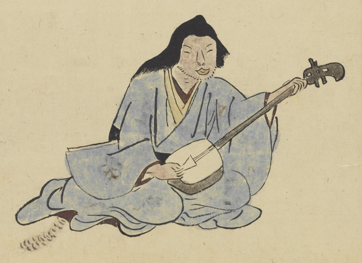

猫また；ネコマタ，猫；ネコ，獣；ケモノ，動物；ドウブツ

猫また。青い着物を着て、三味線を弾いている。尾が出ている。
著作者：長岡多門／出典：親書誌：U426_nichibunken_0448：諸国妖怪図巻／日付：2019／資源識別子：U426_nichibunken_0448_0001_0016
Copyright (c)2010- International Research Center for Japanese Studies, Kyoto, Japan. All rights reserved.